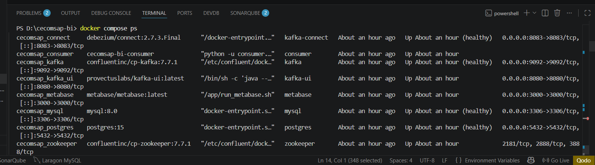
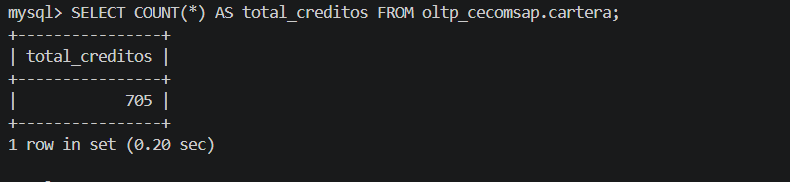
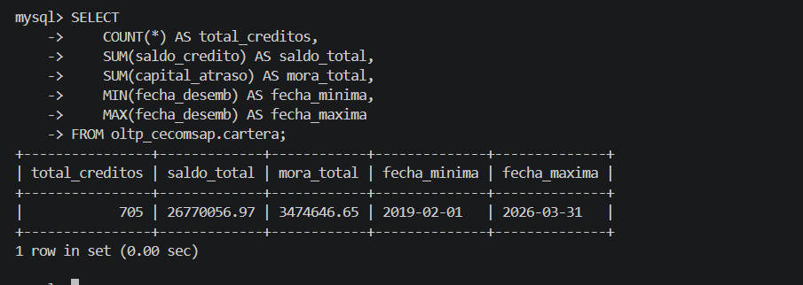
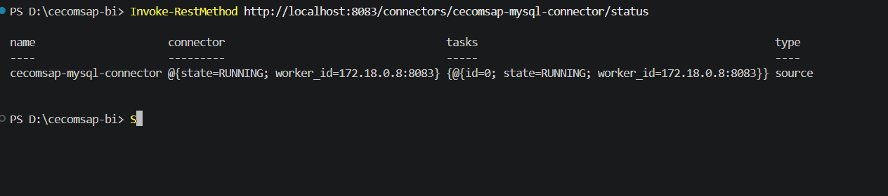
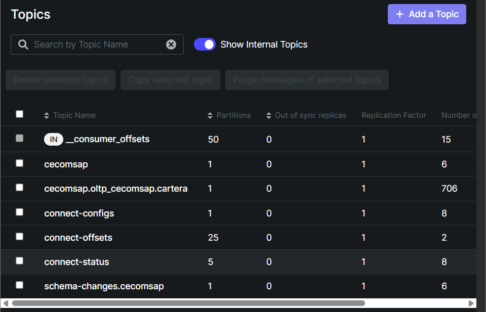
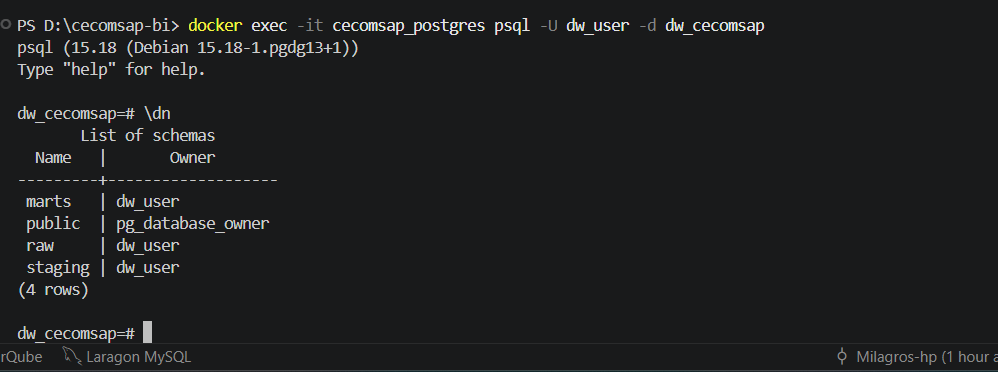
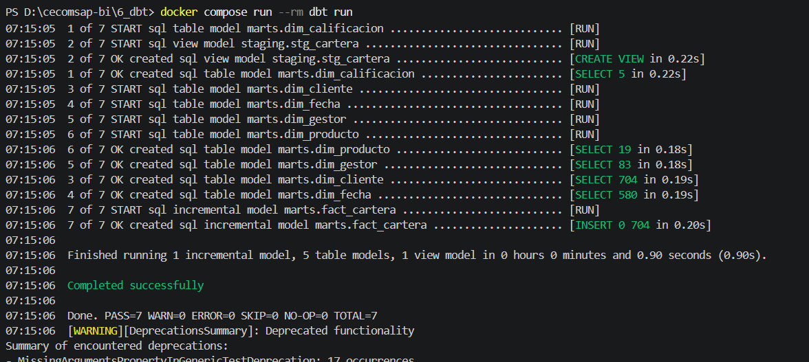
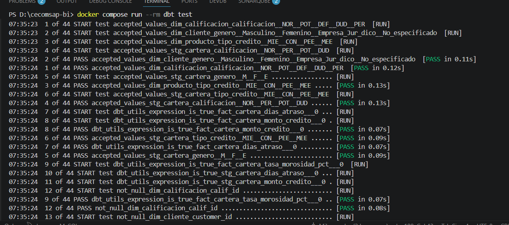
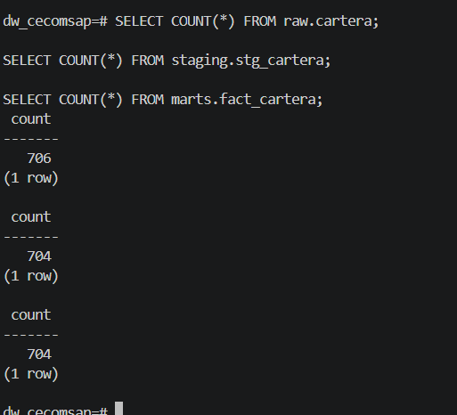

Pipeline de Ingesta y Transformación
6. Fuente Transaccional OLTP
Tabla cartera — Campos Principales
| Grupo | Campos en MySQL | Uso analítico |
|---|---|---|
| Identificación | cod (PK), titular, di | Clave del crédito y del socio |
| Tipo de crédito | tcr (MIE/CON/PEE/MEE), prod, codigo_credito | Clasificación y familia de producto |
| Condiciones | monto_credito, plazo, frec, tasa, od | Base del KPI Saldo Vigente y Tasa |
| Estado de deuda | saldo_credito, capital_atraso, mora, provision | Fuente de los 6 KPIs principales |
| Atraso | cuot_atrs, dias_atrs, cap_venc, int_vnc | Bucket de atraso y mora |
| Calificación SBS | calif (NOR/POT/DEF/DUD/PER) | % Cartera en Riesgo |
| Gestión | gestor, analista, promotor | Ranking de mora por gestor |
| CDC | _cdc_ts | Timestamp para captura incremental Debezium |
Evidencia del Origen — Paso a Paso
PASO 1 — Levantar el stack Docker
docker compose up -d
docker compose ps
# Resultado esperado: cecomsap_mysql, cecomsap_zookeeper,
# cecomsap_kafka, cecomsap_connect, cecomsap_postgres — todos Up

PASO 2 — Cargar el Excel a MySQL
El loader.py lee BD_MARZO26.xlsx e inserta los 737 créditos en la tabla cartera.
docker compose --profile load run --rm loader
# Output: 737 filas insertadas en oltp_cecomsap.cartera

PASO 3 — Verificar los datos en MySQL
Conectarse con DBeaver (localhost:3306, user: root, pass: root1234) y ejecutar:
SELECT
COUNT(*) AS total_creditos,
ROUND(SUM(saldo_credito), 2) AS saldo_total,
ROUND(SUM(capital_atraso),2) AS mora_total,
ROUND(SUM(provision), 2) AS provision_total
FROM oltp_cecomsap.cartera;
-- Resultado esperado: 737 filas con los totales financieros reales

7. Pipeline de Ingesta y Transformación
7.1 Ingesta CDC con Debezium + Kafka
PASO 4 — Registrar el conector Debezium
curl -X POST http://localhost:8083/connectors \
-H "Content-Type: application/json" \
-d @3_debezium/connector-config.json
# Verificar estado:
curl http://localhost:8083/connectors/cecomsap-mysql-connector/status

PASO 5 — Iniciar el Consumer → datos en raw.cartera
docker compose up -d consumer
# Verificar en PostgreSQL (localhost:5432, user: dw_user, pass: dw_pass123):
SELECT COUNT(*) FROM raw.cartera; -- Esperado: 737

Figura 6. Kafka UI mostrando el topic
cecomsap.oltp_cecomsap.carteracon 706 mensajes, confirmando que Debezium está capturando los cambios de la tabla cartera y publicándolos correctamente en Kafka.
7.2 Transformación con dbt
PASO 6 — Ejecutar dbt run → staging y marts
dbt transforma raw.cartera en stg_cartera (limpieza) y luego en el modelo dimensional (5 dims + fact_cartera).
docker compose --profile dbt run --rm dbt run
# Output esperado — 7 modelos OK:
# stg_cartera, dim_fecha, dim_producto, dim_cliente,
# dim_gestor, dim_calificacion, fact_cartera


PASO 7 — Ejecutar dbt test → calidad automática
dbt test verifica: not_null en cod, unique en cod, accepted_values en calificacion (NOR/POT/DEF/DUD/PER) y en tipo_credito (MIE/CON/PEE/MEE), y expression_is_true para monto_credito > 0.
docker compose --profile dbt run --rm dbt test
# Output esperado: N of N PASS — sin ningún FAIL

PASO 8 — Verificar las tres capas en PostgreSQL
-- Bronze (réplica exacta):
SELECT COUNT(*) FROM raw.cartera; -- 737
-- Silver (limpieza dbt):
SELECT COUNT(*) FROM staging.stg_cartera; -- 704
-- Gold (modelo dimensional):
SELECT COUNT(*) FROM marts.fact_cartera; -- 704

La tabla
raw.carteracontiene 737 registros cargados desde la fuente, mientras questaging.stg_carteraymarts.fact_carteracontienen 704 registros después de aplicar las reglas de transformación y calidad de datos.
Hallazgos de Validación del Pipeline
| Hallazgo | Causa | Ajuste aplicado | Estado |
|---|---|---|---|
| Cluster Kafka con cluster.id inválido al reiniciar Docker | Zookeeper con volumen persistente cachea el ID entre reinicios | Eliminar volumen de zookeeper en docker-compose → arranque limpio siempre | Resuelto |
| Consumer ignoraba mensajes con operación 'd' (delete) y fallaba | Debezium incluye mensajes de delete con value = null | consumer.py filtra operaciones distintas de 'd' antes de insertar | Resuelto |